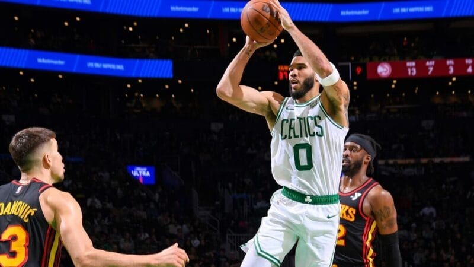

Sao Celtics nói thẳng về điều không thích ở NBA In-Season
Jayson Tatum đã có những bộc bạch về NBA In-Season sau khi Celtics giành chiến thắng trước Hawks trong ngày
thi đấu hôm nay.
Boston Celtics đón tiếp Atlanta Hawks trên sân TD Garden bằng chiến thắng 113-103 khá thuyết phục. Trong đó,
Jayson Tatum nhưng thường lệ vẫn là cái tên ghi nhiều điểm nhất bên phía đội chủ nhà. Anh ném tổng cộng 34
điểm, 9 rebound và 4 kiến tạo trong suốt 39 phút thi đấu.
Sau trận, tiền phong 25 tuổi đã có những chia sẻ về NBA In-Season. Giải đấu đã gây ra rất nhiều tranh cãi vì
nhiều lý do khác nhau, bao gồm cả việc sân thi đấu chướng mắt với phong cách thi đấu khác nhau của mỗi đội.
Tuy nhiên, Jayson Tatum lại có một nỗi lo lắng mới trước sự cạnh tranh đang diễn ra mà những cầu thủ khác
chưa chỉ ra.

Tatum nói thẳng điều không thích về NBA In-Season
PD đang không tôn trọng các đội bóng
Dù rất tôn trọng những luật bất thành văn nhưng ngôi sao của Celtics không thích cách NBA In-Season cho phép
các đội ghi bàn triệt hạ đối thủ dù đã ấn định chiến thắng. Tatum cho rằng việc ghi thêm nhiều bàn khi trận
đấu đã an bài là không nên được thực hiện để thể hiện sự tôn trọng với đội thua cuộc, theo Jack Simone của
CelticsBlog.
Celtics hiện đang nắm giữ hạt giống số 2 ở bảng C Miền Đông. Sau trận thua Orlando Magic, đội bóng của Tatum
tụt xuống thành tích 2 thắng, 1 thua và hiệu số PD bằng 0. Đây là điều mà họ hy vọng sẽ thay đổi để thăng
tiến. Trong quá trình đó, Tatum và các đồng đội sẽ phải cạnh tranh gắt gao với Brooklyn Nets và Orlando
Magic.
10 Minutes Of Jayson Tatum Highlights To Get You HYPED 🍀🔥